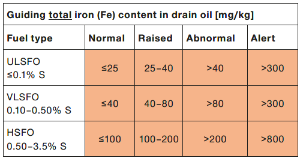
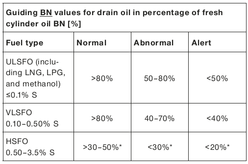
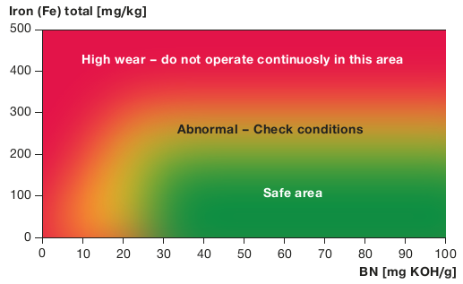

平時追蹤、檢查主機汽缸缸套(Cylinder liner)和活塞環(Piston ring)是否磨損，可透過掃氣孔檢查(Port inspection)來了解，但這需要等船停靠碼頭時才能進行，透過掃氣孔逐缸檢查缸套與活塞環的狀況，活塞冠(Piston crown)、活塞環間(Piston ring lands & top lands)等是否有積碳? 積碳狀況如何? 也可以進行量測活塞環表面塗層(Coating)的厚度，確認各活塞環的表面狀況是否塗層有剝落(peel off)，同時也可看到各缸套部分表面狀況，是否有刮痕? 是否有polish現象? Honing mark是否還存在等等，最重要的是要拍照存參，每次檢查結果與先前的檢查報告做比較，找出可能問題之處並改善之。拜科技進步所賜，現在有攝影設備可放置活塞冠隨活塞上下動作來做缸套全面的拍攝以作為後續分析依據。這些工作都相當費時與費力，無形中加深船員的工作量。另一種方式是透過汽缸殘油油樣的檢查，針對殘留鹼值和鐵值來判斷是否有異樣的磨損發生。
本篇SL-2023-738 Service Letter是探討缸殘油油樣的檢查規範
- 適用機型
- MAN B&W二衝程船舶柴油主機，機型MC/MC-C, ME/ME-C，適用所有燃油類型。
- 油樣準備
平時要定期清潔掃氣箱底部(scavenge box bottom)。
殘油管線閥門平常處在open的狀態。
收集汽缸殘油首先關閉放殘閥(drain valve)。
打開drain valve確保將不純物沖走(flushing)。
關閉drain valve，同時關閉油樣閥(sample valve)開始收集油樣。
至足夠油樣後，打開sample valve導出油樣至乾淨的油樣瓶。
收集完油樣後關閉sample valve並開啟drain valve。
化驗結果，鐵含量的規範
汽缸殘油的化驗必須考量汽缸油注油率這個因素，通過修正才能與下表的控制值標準做比較。
FeCorr1.0=FeAct x FRAct。
例如，實際注油率是0.80g/kWh，鐵的化驗值是35ppm，換算可得注油率1.0g/kWh時的磨損鐵值是28ppm (0.80 * 35 = 28)。
就以上案例，如果是使用VLSFO，則化驗結果屬"Normal"; 如果是使用ULSFO，則化驗結果屬"Raised"。
主機系統油若因填料函密封不佳會汙染汽缸殘油油樣，這會導致化驗數值偏低。(可透過推算法得到正確數值)
殘油中的鐵值主要來自以下三類
磨料磨損(Abrasive wear) : 來自燃油的觸媒微粒(cat fine)或空氣中的沙粒。
黏合磨損(Adhesive wear) : 導因為水殘留或汽缸油不足。
酸性磨損(Corresive wear) : 燃油中的硫份轉化為硫酸或汽缸油量太少或汽缸油鹼值太低。

fig_汽缸殘油鐵值的控制值(在注油率1.0g/kWh狀態)
化驗結果，鹼值含量的規範
有別於以往對汽缸殘油鹼值控制值的設定，此SL採用與新油的鹼值做比較。
同樣有針對不同燃油設定三種控制值設定(Normal、Abnormal、Alert)。
在VLSFO，Normal和Abnormal間，70%~80%的區間似乎沒被歸類。
在HSFO，設定值是根據Sweep Test的結果來定義的。
主機系統油若因填料函密封不佳會汙染汽缸殘油油樣，這會導致化驗數值偏低。(可透過推算法得到正確數值)

fig_汽缸殘油鹼值的控制值
化驗結果，新版BN & Iron散佈圖
新版 BN & Iron的散佈圖的控制值不再依主機缸徑有所不同。
同時也取消鹼值的上限要求(沒有上限)。
當化驗結果不是落在Safe area區塊，建議藉由調整(加大)注油率來降低磨損。
如果注油率也設定很高，化驗值還是落在High Wear區域，建議改用更高鹼值的汽缸油來因應。

fig_汽缸殘油鹼值與鐵值的散佈圖
fig_MAN B&W Service Letter, SL2023-738